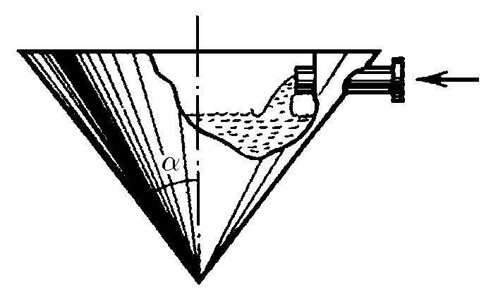
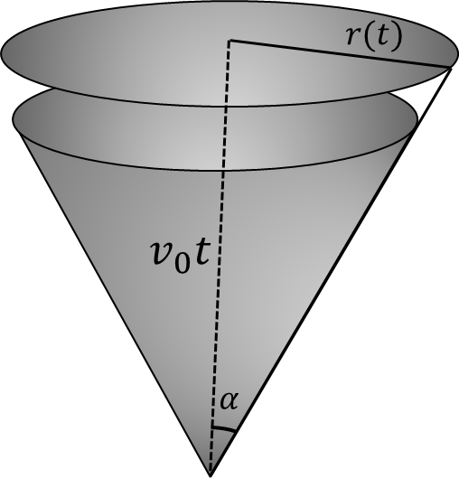

$1.2.11.$ a. In a conical vessel, the water level rises at a constant rate $v_0$. How does the rate of water entering a vessel through a tube of section $s$ depend on time? At time zero, the vessel is empty.
b. A jet of oil hitting the surface of the water spreads over it in a round spot of thickness $h$. How does the speed of movement of the spot boundary depend on time, if the volume of oil $q$ enters per unit of time? At the initial time, the spot radius is zero.

For problem $1.2.11$
Solution

Cone vessel
$a)$ By time $t$, the water level will be $v_0t$. And the rate of change of volume will be equal to:
$$\frac{dV}{dt} = \frac{\pi r(t)^2 dx}{dt}$$
Where $dx$ is the change in water level:
$$\frac{dV}{dt} = \pi r(t)^2 v_0$$
From Geometry,
$$r(t) = v_0 t \cdot tg(\alpha)$$
By definition, the velocity of incoming water is equal to
$$v = \frac{dV}{sdt}$$
Substituting the previous expressions:
$$v = {\pi v_0^3 t^2 \cdot tg^2(\alpha)}/s$$
$b)$ For a small time interval $dt$, the volume changes by
$$dV = q dt$$
Also the volume increment can be written as
$$dV = 2\pi r dr \cdot h $$
Thus:
$$ q dt = 2\pi r dr \cdot h$$
Considering $v = \frac{dr}{dt}$,
$$ \fbox{$v = \frac{q}{2\pi r h}$}$$